What is this?
Merge sort recurrence:
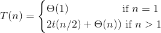
We "solve" these by finding a closed-form equation that
describes the recurrence but without recursion.
Solution: T(n) = Θ(n lg n)
Methods:
Technicalities
We often omit floors, ceilings, and boundary conditions. For
instance, if n is odd, we may say n / 2 anyway.

Only makes since in an array with both negative and positive
values: otherwise the answer is either the whole array of the
maximum member.
Try every combination of two elements!
A n choose 2 problem, so order of Ω(n2).
n choose 2 will be about 1/2 n2, since it equals
n(n - 1) / 2. So we can establish a lower bound by setting c =
1/3, for instance, and n choose 2 will always be bounded from
below by c*n2.
We loon at the problem differently: let's find the nonempty, contiguous subarray of our array whose values have the largest sum. We call this the maximum subarray.
To solve this problem, we divide an array A into three subarrays, and ask what is the maximum subarray in each:
Problems 1 and 3 are simply this same problem on a smaller array!
Problem 2 can be solved by finding the maximum subarrays in
low-to-mid and in mid+1-to-high.
The recurrence is the same as for merge sort.
We divide each of our initial matrices into four
sub-matrices, and multiply them. Which we do by dividing
each of them into four...
In the base case when each matrix has only one member, we
just multiply them and return the result.
So what is our recurrence? Each step except the base case
multiplies eight matrices of size n / 2. So they
contribute 8T(n / 2) to running time. There are also four
matrix additions of matrices containing n2 / 4
entries -- squared because n specifies an n x n matrix. So
this contributes Θ(n2) time.
So our recurrence is:
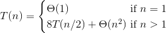
The master method will show us that the solution to this
recurrence is:
T(n) = Θ(n3)

By adding ten additions, we can cut the divide portion of
our algorithm down to seven multiplications instead of
eight.
Let's try one!
Here is the method:
For two matrices:
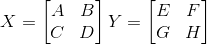
Define:
P1 = A(F - H)
P2 = H(A + B)
P3 = E(C + D)
P4 = D(G - E)
P5 = (A + D) * (E + H)
P6 = (B - D) * (G + H)
P7 = (A - C) * (E + F)
Then:
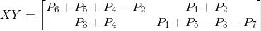
So let's try this example:
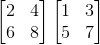
Important Lesson
There are often serious trade-offs between set-up time and
aymptotic run-time. One must carefully consider how large
one's inputs are likely to be before opting for a complex
algorithm like Strassen's. On modern hardware optimized for
matrix multiplication, matrix sizes often need to be in the
thousands before Strassen's algorithm yields significant
gains.

The monks in a temple have the job of moving all of the
disks on one peg to another, constrained by these rules:
1) Only one disk can be moved at a time.
2) Each move consists of taking the upper disk from
one of the stacks and placing it on top of another stack
i.e. a disk can only be moved if it is the
uppermost disk on a stack.
3) No disk may be placed on top of a smaller disk.
(
Source
)

Recurrence:
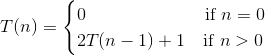

Why is this the recurrence? Well, to move disk n,
we first move disks 1 to n - 1 to the spare peg,
then move n to the target peg, then move disks 1
to n - 1 to the target peg.
So we guess the closed-form solution is something like
2n. Why? Well, we multiply by a factor of 2 each
recursion!
Now, let's try writing out a few elements of the sequence:
T(0) = 0
T(1) = 2*0 + 1 = 1
T(2) = 2*1 + 1 = 3
T(3) = 2*3 + 1 = 7
T(4) = 2*7 + 1 = 15
T(5) = 2*15 + 1 = 31
So is the answer 2n - 1?
Base case: T(0) = 0 = 20 - 1.
Yes!
Now induction: we want to show that, if T(n - 1) =
2(n - 1) - 1, then T(n) will equal
2n - 1.
How proof by induction works: we have proved our base case.
Now we try to prove that for any n, if for n - 1 our
hypothesis is true, then it is true for n as well. And since we
have already proved that for n = 0 it is true, that will
mean it will be true for all n whatsoever.
So we substitute in for n - 1:
T(n) = 2(2(n - 1) - 1) + 1
= 2 * 2(n - 1) - 2 + 1
= 2n - 1
And we are done!
There are two ways to use this method:
Analyze the tree:
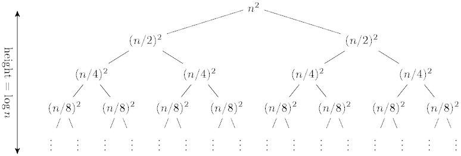
Calculate the work at each level:
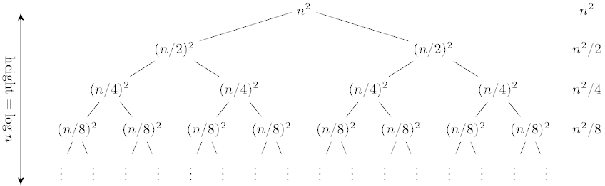
This produces the geometric series:
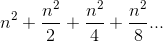
If we set a = n2 and r = 1/2, then we have the
general sum of a converging geometric series:
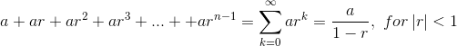
So the solution here is O(n2). The amount of work at
each level is reduced by a power of two, and so is
just a constant factor times the root.
Another example:
In our textbook, we have the recurrence:
T(n) = 3T(n / 4) + cn2, c > 0
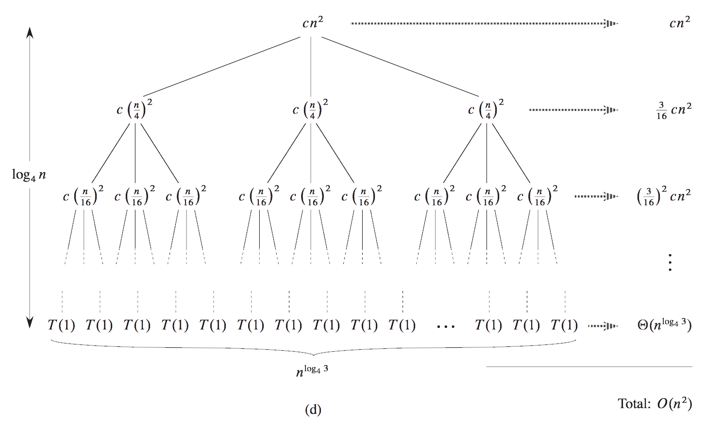
alogbc = clogba
Form: T(n) = aT(n / b) + f(n).
Where a ≥ 1 and b > 1 and f(n) asymptotically positive.
Three cases
Compare nlogba and f(n):
Sample problems: